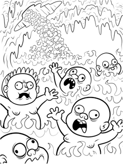

past performance | ||
|  |
Perfect Disgrace Theater Proudly Presents A CRUCIBLE A new play by Brian Bauman Directed by Kate Gagnon | |
|
A CRUCIBLE follows the high school drama club at Our Lady of the Immaculate Conception as it sets out to stage Arthur Miller's classic play, The Crucible. Conflicts erupt when ideas about sexuality and contemporary performance begin to influence the young actors and their POV about the production. The young women and men, fueled by a passion for black magic and avant garde tropes, stage a coup to build a performance that addresses their own lives. This original play re-appropriates the writing of Arthur Miller, as well as Marilyn Monroe and Andy Warhol's diaries, John Huston's film The Misfits and other texts. A CRUCIBLE is a darkly comic play about the power and problems of performance. A cast of nine will embody twenty-three different roles and lead the audience on a hallucinogenic survey of classical, modern and post-modern theater. The cast includes Heather Litteer (Big Art Group), Haley Rawson (Tenement Street Workshop), Chris Tyler (Our Hit Parade, Dixon Place), Robb Martinez (The Acting Company), nicHi Douglas (Political Subversities), and more -- ALL OF THEM WITCHES!
| ||
upcoming performances |
|||
 |
|||
| EVQ Film Festival 2018 August 20-25 |
|||
performance archives |
|||
| 2018 | 2017 | 2016 | 2015 |
| 2014 | 2013 | 2012 | 2011 |
| 2010 | 2009 | 2008 | 2007 |